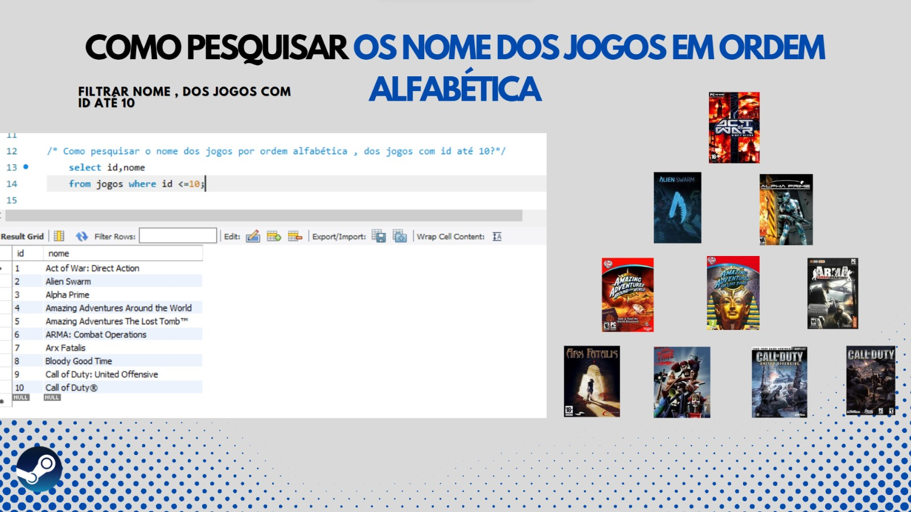

PGM4

Projeto em Grupo do módulo 4 - Visualizando a situação
by Squad #02
Seguindo com o cronograma do Projeto Programadores Cariocas, avançamos para o penúltimo bloco de estudos.
Neste módulo fomos desafiados a montar um dashboard com base em um conjunto de dados escolhido pelo grupo a fim de realizar uma aprensentação com a exploração dos dados.

O conjunto de dados escolhido foi sobre a plataforma Steam; o grupo confeccionou cinco questões sobre o tema e as replicou com funções do sistema de gerenciamento de banco de dados MySQL.
Para a visualização da pesquisa, foi utilizada a plataforma de design Canvas para a criação dos gráficos e um site simples para a aprensentação geral do trabalho.